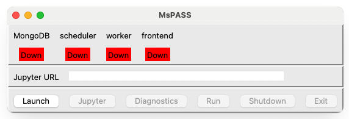
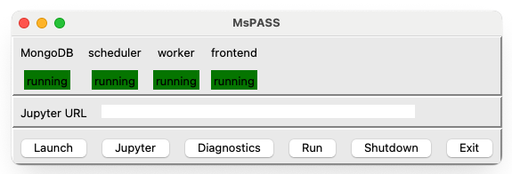
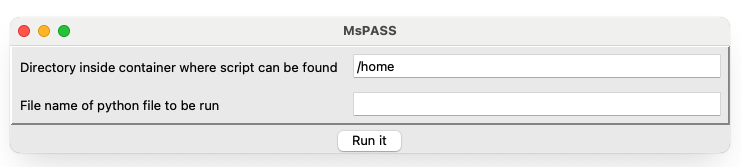

Running MsPASS on a Desktop Computer#
The optional mspass_launcher project provides a graphical interface for starting MsPASS services with Docker Compose. The desktop quick start is simpler for a first run; use this page if you prefer the graphical launcher.
Install the desktop launcher#
Install and start Docker Desktop. Linux users can instead use Docker Engine. The Docker installation guide has platform-specific instructions. Confirm that Docker and Docker Compose are available:
docker version
docker compose version
The launcher is a separate Python package. Install it in the Python virtual environment you normally use for applications:
python -m pip install mspass_launcher
The launcher uses Tk for its window. If the application does not open, first check that Tk is available to the same Python installation:
python -c "import tkinter; print(tkinter.TkVersion)"
The MsPASS image is downloaded with:
docker pull mspass/mspass
Run mspass-desktop#
Create a project directory and change to that directory before starting the
launcher. The launcher mounts the current directory at /home in the
containers, so notebooks and results saved under /home remain in the host
project directory.
Start the launcher with:
mspass-desktop
The initial window should resemble the following figure. The four services are down and only Launch is available.
{kind=link}

Fig. 1 Initial window created by mspass-desktop.#
Select Launch and allow the containers time to start. The database,
scheduler, worker, and frontend status fields should change to running.
{kind=link}

Fig. 2 Desktop window with all four services running.#
Wait until all required services report running before beginning work.
If a service stays down, read the messages in the terminal from which you
started mspass-desktop.
The first run creates these directories in the project directory:
db/MongoDB database files.
logs/Logs from the database, scheduler, and workers.
work/Temporary files used by Dask workers.
Do not delete or copy db/ while MongoDB is running.
Open JupyterLab#
After the services are running, select Jupyter. The launcher opens JupyterLab in a browser and displays its address in the Jupyter URL field. If the browser does not open automatically, copy the complete URL from that field into a browser on the same computer. Do not share a URL that contains an access token.
Save notebooks and results under /home so they remain in the host project
directory.
Open the Dask dashboard#
Select Diagnostics to open the Dask dashboard. The dashboard shows
connected workers, running tasks, and memory use. If it does not open
automatically, the default address is http://localhost:8787/status.
Run a Python script#
Select Run to open the script window:

Fig. 3 Window opened by the Run control.#
The first field is the script directory inside the container. For a script
at the top level of the project directory, leave it as /home. Enter the
script name, such as analysis.py, in the second field and select Run
it. Output appears in the terminal from which mspass-desktop was
started. If you need a persistent transcript of that output, redirect the
command’s output when launching the GUI or use a terminal-recording tool such
as the Unix script command.
Note
In launcher release 0.1.1, scripts started with Run execute in the
scheduler container, where Client() does not automatically receive the
service addresses. A script that uses mspasspy.client.Client
should supply them explicitly:
from mspasspy.client import Client
client = Client(
database_host="mspass-db",
scheduler="dask",
scheduler_host="mspass-scheduler",
)
Shut down MsPASS#
Save notebooks and wait for scripts to finish. Select Shutdown to stop the services while leaving the launcher window open, or Exit to stop the services and close the launcher. Let the services shut down cleanly before closing Docker.
Configuration#
Most users do not need to change the launcher configuration. If you do, copy
MsPASSDesktopGUI.yaml and DesktopCluster.yaml from the installed
mspass_launcher package into data/yaml under the project directory.
Edit those project copies instead of files in the installed package, which an
upgrade can replace.
MsPASSDesktopGUI.yaml controls the browser command, window size, startup
delay, status interval, and the Compose file used by the launcher.
DesktopCluster.yaml controls container images, mounts, ports, and service
settings. The launcher expects the service names mspass-db,
mspass-scheduler, mspass-worker, and mspass-frontend.
The GUI configuration fields most likely to need adjustment are:
web_browserDefines the command the launcher uses to open JupyterLab and diagnostics. The value must be resolvable from the command-line environment in which
mspass-desktopruns. On macOS, for example, launching an application from a terminal may require anopen -a ...command rather than only the application name.minimum_window_size_xandminimum_window_size_ySet the minimum GUI dimensions in pixels. Adjust these for an unusually high- or low-resolution display if controls are clipped or the initial window is inconveniently sized.
engine_startup_delay_timeSets how long the launcher waits for Docker services during startup. Reducing it can shorten launch time on a fast, lightly loaded computer, but a service may be reported down before it is ready. Increase it if startup errors consistently occur while MongoDB or another container is still initializing.
status_monitor_time_intervalSets how frequently the launcher checks the state of the Compose services. A shorter interval updates a failed-service indicator sooner, while a longer interval reduces polling. The packaged default historically used a ten-second interval; inspect your installed configuration rather than assuming that value is unchanged.
The Compose configuration is the appropriate place to change published ports, host mounts, container images, and service environment variables. Preserve the expected service names unless the launcher configuration is updated at the same time.
Validate a modified Compose file before selecting Launch:
docker compose --file data/yaml/DesktopCluster.yaml config
See the mspass_launcher repository for the current packaged defaults and release requirements.
Troubleshooting#
The command is not found#
Make sure the Python environment in which you installed mspass_launcher
is active. Check the installation with:
python -m pip show mspass_launcher
The GUI does not open or is incomplete#
Run the Tk check from the installation section. On macOS, some Python and Tk combinations can create an incomplete window; mspass_launcher issue 7 describes this historical problem.
Services remain down#
Check that docker version can reach the Docker server and that docker
compose version succeeds. Read the launcher terminal for a port conflict or
service startup error. The default services use ports 27017, 8786,
8787, and 8888.
JupyterLab does not open#
Wait until the frontend reports running, select Jupyter, and copy the
address from Jupyter URL into the browser. If the field is empty, inspect
the launcher terminal for the frontend error.
Other ways to run MsPASS#
The graphical launcher is optional:
Follow the desktop quick start for the shortest first run.
Use Run MsPASS with Docker for a single-container command-line workflow.
Use Deploy MsPASS with Docker Compose for explicit multi-container control.